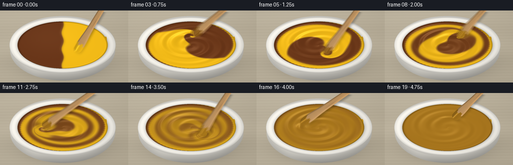
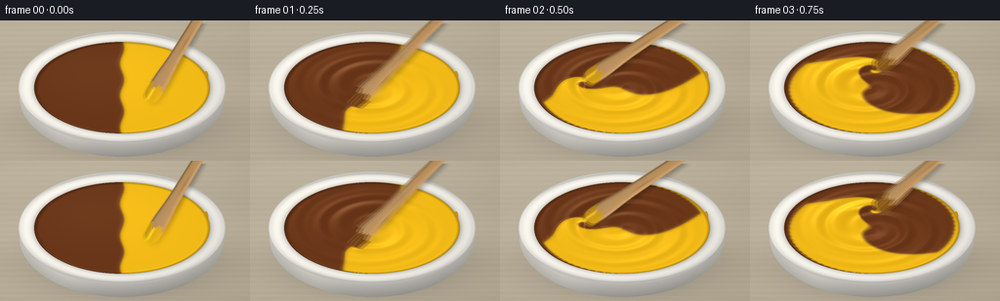

CODING AGENTS AS PIXEL WORLD MODELS
traex/GPT-6.1-Sol · material_0005
点击播放 · 原生 RGB 像素
逐轮保存的候选
回放视频、检查图与代码变化。
每份候选均可单独播放。实际图片检查记录在下方工具轨迹中。
候选 01播放与检查图
点击播放 · 原生 RGB 像素


展开代码变化
--- 上一保存版本
+++ 本次保存版本
@@ -0,0 +1,221 @@
+"""Procedural, supersampled RGB animation of two paints being stirred.
+No source imagery, learned models, or rendering engines are used.
+"""
+from pathlib import Path
+import json
+import numpy as np
+from PIL import Image, ImageDraw, ImageFilter
+import artifact_io
+
+ROOT = Path(__file__).resolve().parent
+SPEC = json.loads((ROOT/'task_spec.json').read_text())
+W,H = SPEC['width'],SPEC['height']
+S=3
+WW,HH=W*S,H*S
+rng=np.random.default_rng(518)
+y,x=np.mgrid[0:HH,0:WW].astype(np.float64)
+x=(x+.5)/S; y=(y+.5)/S
+CX,CY=125.,69.
+RX,RY=90.,47.
+u=(x-CX)/RX; v=(y-CY)/RY
+rad=np.sqrt(u*u+v*v); phi=np.arctan2(v,u)
+
+# Fine wood grain in a pale, out-of-focus work surface.
+noise=rng.normal(0,1,(HH,WW))
+grain=(1.7*np.sin(y*1.1+.40*np.sin(x*.025)) + .9*np.sin(y*4.1+.8*np.sin(x*.014))
+ +2.1*np.sin(y*.105+.7*np.sin(x*.010)))
+bg=np.empty((HH,WW,3),float)
+for k,c in enumerate((184,174,153)):
+ bg[:,:,k]=c+grain+noise*.60+8*(1-x/W)-5*y/H
+# An almost invisible board joint, and the soft contact shadow of the bowl.
+bg-=3.5*np.exp(-((y-136-.013*x)/.55)**2)[:,:,None]
+shadow=np.exp(-(((x-129)/104)**2+((y-107)/35)**2)*1.9)
+bg*=1-.27*shadow[:,:,None]
+bg*=1-.07*np.exp(-(((x-128)/89)**2+((y-127)/14)**2)*2)[:,:,None]
+
+# Bowl body: an off-white glazed ceramic vessel with a substantial rounded rim.
+bodyr=np.sqrt(((x-CX)/105)**2+((y-79)/61)**2)
+bodymask=bodyr<1
+bodyshade=.89-.16*np.clip((y-82)/61,0,1)+.04*(CX-x)/105
+bodyshade-=.12*np.maximum(bodyr-.77,0)/.23
+bodyshade+=.06*np.exp(-((x-65)/27)**2)
+body=np.stack([242*bodyshade,239*bodyshade,230*bodyshade],-1)
+base=np.where(bodymask[:,:,None],body,bg)
+outer=np.sqrt(((x-CX)/106)**2+((y-CY)/58)**2)
+inner=np.sqrt(((x-CX)/RX)**2+((y-CY)/RY)**2)
+ring=(outer<=1)&(inner>=1)
+# Smooth toroidal cross section, then darken the short inward-facing wall.
+q=np.clip((inner-1)/(.182),0,1)
+ringshade=.77+.23*np.sin(np.pi*q)**.6
+ringshade+=.035*(-u-.45*v)
+ringshade-=.055*np.exp(-q*14)
+rim=np.stack([245*ringshade,242*ringshade,234*ringshade],-1)
+base=np.where(ring[:,:,None],rim,base)
+# Rounded outermost highlight and the shadow below the lip.
+edge=np.exp(-((outer-.983)/.008)**2)*(outer<1)*(inner>1)
+base+=edge[:,:,None]*np.array([10,10,9])
+# Small, incidental paint marks on the inside of the rim.
+for px,py,ax,ay,col in [(211,58,2.4,6.1,(209,157,28)),(42,72,1.7,5.0,(111,64,31))]:
+ fleck=((x-px)/ax)**2+((y-py)/ay)**2<1
+ fleck &= ring
+ base=np.where(fleck[:,:,None],np.array(col)*.94,base)
+base=np.clip(base,0,255)
+
+# Concentration is advected in a circular container using our own numpy sampler.
+N=320
+g=np.linspace(-1.08,1.08,N)
+V,U=np.meshgrid(g,g,indexing='ij')
+R=np.sqrt(U*U+V*V)
+inside=R<1
+step=g[1]-g[0]
+paint=.5+.5*np.tanh((U+.023*np.sin(V*9))/.016)
+
+def sample(a,xx,yy):
+ ix=np.clip((xx-g[0])/step,0,N-1.000001)
+ iy=np.clip((yy-g[0])/step,0,N-1.000001)
+ j=ix.astype(np.int32); i=iy.astype(np.int32)
+ fx=ix-j; fy=iy-i
+ return (a[i,j]*(1-fx)*(1-fy)+a[i,j+1]*fx*(1-fy)+
+ a[i+1,j]*(1-fx)*fy+a[i+1,j+1]*fx*fy)
+
+def angle(t):
+ if t<3.75:
+ return .75+5.45*t
+ z=min(t-3.75,1.)
+ return .75+5.45*3.75+5.45*(z-.5*z*z)
+
+def tip(t):
+ a=angle(t)
+ rr=.42+.035*np.sin(t*4.8)
+ return rr*np.cos(a),rr*np.sin(a)
+
+def advance(a,t,dt):
+ # Differential rotation stretches the two equal pools into thick ribbons.
+ strength=min(1,t/.35)
+ omega=strength*(3.4+3.5*np.exp(-R*R/.42))
+ vx=-omega*V; vy=omega*U
+ tx,ty=tip(t)
+ dx=U-tx; dy=V-ty
+ # A compact moving eddy trails the spatula, folding the paint into the flow.
+ ga=np.exp(-(dx*dx+dy*dy)/.043)
+ vx+=-dy*12*ga*strength; vy+=dx*12*ga*strength
+ # A weak nonaxisymmetric incompressible flow breaks concentric ribbons.
+ vx+=.40*np.sin(t*2.5)*np.sin(np.pi*U)*np.cos(np.pi*V)*(1-R*R).clip(0)
+ vy-=.40*np.sin(t*2.5)*np.cos(np.pi*U)*np.sin(np.pi*V)*(1-R*R).clip(0)
+ bx=U-dt*vx; by=V-dt*vy
+ br=np.sqrt(bx*bx+by*by)
+ scale=np.minimum(1,.999/np.maximum(br,1e-7))
+ adv=sample(a,bx*scale,by*scale)
+ lap=(np.roll(adv,1,0)+np.roll(adv,-1,0)+np.roll(adv,1,1)+np.roll(adv,-1,1)-4*adv)
+ adv+=.075*lap
+ # The ever-finer lamellae homogenize as pigment disperses under shear.
+ mixrate=.025+max(0,t-1.2)*.25+max(0,t-2.6)*1.2
+ adv=.5+(adv-.5)*np.exp(-mixrate*dt)
+ return np.where(inside,np.clip(adv,0,1),a)
+
+# The wooden paddle is rendered in its own rotated material coordinates.
+def tool_layer(t,coatcolor):
+ tx,ty=tip(t); bx=CX+RX*tx; by=CY+RY*ty
+ ax=217+2*np.sin(t*1.1); ay=-25
+ dx=ax-bx; dy=ay-by; L=np.hypot(dx,dy)
+ ex=dx/L; ey=dy/L
+ along=(x-bx)*ex+(y-by)*ey
+ cross=-(x-bx)*ey+(y-by)*ex
+ half=6.8+1.8*np.exp(-((along-20)/21)**2)-1.8*np.clip(along/L,0,1)
+ half*=np.sqrt(np.clip(1-((np.minimum(along,6)-6)/6)**2,0,1))
+ alpha=np.clip((half-np.abs(cross))*S+.5,0,1)*(along>=0)*(along<L)
+ woodgrain=(1.4*np.sin(cross*3+.30*np.sin(along*.075))+
+ 1.6*np.sin(cross*6.5+along*.05)+.75*np.sin(along*.50))
+ val=.96+.05*cross/np.maximum(half,.1)
+ val-=.23*np.exp(-((cross+half-.9)/1.0)**2)
+ val+=.075*np.exp(-((cross-half+1.5)/1.2)**2)
+ rgb=np.stack([195*val+woodgrain,151*val+woodgrain,99*val+woodgrain],-1)
+ # Dark flecks in the grain and a warm clean bevel on the dry handle.
+ knot=np.exp(-((along-70)/12)**2-((cross-1.7)/1.0)**2)
+ rgb-=knot[:,:,None]*np.array([22,20,15])
+ boundary=17+2.8*np.sin(cross*.60)+1.2*np.sin(cross*1.8)
+ wet=along<boundary
+ wetshade=.89+.10*cross/np.maximum(half,.1)+.13*np.exp(-((cross+1.4)/1.6)**2)
+ wetRGB=coatcolor[None,None,:]*wetshade[:,:,None]
+ wetRGB+=np.exp(-((cross+2.2)/.8)**2)[:,:,None]*np.array([50,44,29])
+ rgb=np.where(wet[:,:,None],wetRGB,rgb)
+ return np.clip(rgb,0,255),alpha,(bx,by,ex,ey,L)
+
+
+def render(t,a):
+ frac=sample(a,u,v)
+ blend=min(1,max(0,(t-3.55)/.8))
+ frac=.5+(frac-.5)*(1-blend)
+ brown=np.array([105.,53.,24.]); yellow=np.array([245.,188.,22.])
+ pigment=brown[None,None,:]*(1-frac[:,:,None])+yellow[None,None,:]*frac[:,:,None]
+ pigment-= (4*frac*(1-frac))[:,:,None]*np.array([8.,4.,-5.])
+ # Height is a shallow vortex plus soft moving viscous ridges and a paddle wake.
+ vigor=min(1,t/.4)*(1-.6*np.clip((t-3.75),0,1))
+ height=-.046*vigor*np.exp(-rad*rad/.12)
+ height+=.011*vigor*np.sin(24*rad-2*phi-2.2*t)*np.exp(-((rad-.47)/.32)**2)
+ height+=.003*np.sin(42*rad-3*phi-2.8*t)*np.exp(-((rad-.64)/.28)**2)*vigor
+ tx,ty=tip(t); th=angle(t)
+ dangle=np.arctan2(np.sin(phi-th),np.cos(phi-th))
+ height+=.023*vigor*np.exp(-((rad-.43)/.052)**2)*np.exp(-((dangle+.33)/.40)**2)
+ height-=.027*vigor*np.exp(-((u-tx)**2+(v-ty)**2)/.019)
+ # Broad crests at the boundaries of the original ribbons.
+ gy,gx=np.gradient(frac,1/(RY*S),1/(RX*S))
+ pigmentedge=np.sqrt(gx*gx+gy*gy)
+ height+=.003*(1-np.exp(-pigmentedge*.22))*(1-blend)
+ height+=.010*np.exp(-((rad-.986)/.019)**2)
+ hy,hx=np.gradient(height,1/(RY*S),1/(RX*S))
+ nx=-hx; ny=-hy; nz=np.ones_like(nx)
+ nl=np.sqrt(nx*nx+ny*ny+nz*nz); nx/=nl; ny/=nl; nz/=nl
+ light=np.array([-.35,-.42,.835]); light/=np.linalg.norm(light)
+ diffuse=np.clip(nx*light[0]+ny*light[1]+nz*light[2],0,1)
+ color=pigment*(.77+.26*diffuse[:,:,None])
+ # Two broad overhead reflections, softened to suggest glossy, thick wet paint.
+ for hv,amp,powr in [(np.array([-.12,-.16,.98]),44,85),(np.array([.14,-.27,.955]),25,105)]:
+ hv/=np.linalg.norm(hv)
+ reflect=np.clip(nx*hv[0]+ny*hv[1]+nz*hv[2],0,1)**powr
+ location=.22+.78*np.exp(-((u+.33)/.72)**2-((v+.35)/.72)**2)
+ color+=reflect[:,:,None]*amp*location[:,:,None]*np.array([1.,.95,.78])
+ meniscus=np.exp(-((rad-.989)/.018)**2)
+ color*=1-.22*meniscus[:,:,None]
+ tiny=(.6*np.sin(u*102+v*89)+.35*np.sin(u*167-v*133))
+ color+=tiny[:,:,None]*.35
+ out=np.where((rad<=1)[:,:,None],color,base).copy()
+ # A clean edge reflection on the side away from the main source.
+ rimshine=np.exp(-((rad-.980)/.006)**2)*np.exp(-((phi-2.2)/.65)**2)
+ out+=rimshine[:,:,None]*np.array([41,34,18])
+ coatf=float(sample(a,np.array(tx),np.array(ty)))
+ coatf=.5+(coatf-.5)*(1-blend)
+ coat=brown*(1-coatf)+yellow*coatf-np.array([8,4,-5])*4*coatf*(1-coatf)
+ # Sub-frame shutter samples preserve the direction and speed of stirring.
+ exposures=[]
+ for offset in [-.018,0,.018]:
+ tt=max(0,t+offset)
+ wood,mask,geo=tool_layer(tt,coat)
+ bx,by,ex,ey,L=geo
+ # Soft cast shadow, fading toward the immersed end of the paddle.
+ im=Image.fromarray((mask*255).astype(np.uint8))
+ sh=np.asarray(im.filter(ImageFilter.GaussianBlur(2.1*S)),dtype=float)/255
+ sh=np.roll(np.roll(sh,3*S,axis=0),2*S,axis=1)
+ shadowfade=np.clip(((x-bx)*ex+(y-by)*ey)/48,0,1)*.7+.3
+ under=out*(1-.27*sh[:,:,None]*shadowfade[:,:,None])
+ exposures.append(under*(1-mask[:,:,None])+wood*mask[:,:,None])
+ out=sum(exposures)/len(exposures)
+ # Subtle lens falloff, keeping the central material vivid and legible.
+ falloff=1-.035*(((x-128)/158)**2+((y-71)/98)**2)
+ out=np.clip(out*falloff[:,:,None],0,255).astype(np.uint8)
+ return np.asarray(Image.fromarray(out).resize((W,H),Image.Resampling.LANCZOS))
+
+frames=[]
+last=0.
+for k in range(SPEC['frames']):
+ t=k/SPEC['fps']
+ if k:
+ steps=10
+ dt=(t-last)/steps
+ for j in range(steps):
+ paint=advance(paint,last+(j+.5)*dt,dt)
+ frames.append(render(t,paint))
+ last=t
+ print(f'Rendered {k+1}/{SPEC["frames"]}',flush=True)
+artifact_io.save(np.stack(frames).astype(np.uint8),ROOT)
+print('Saved RGB video artifacts.',flush=True)
可观测工具轨迹
实际执行的命令与返回图片。
命令 1exit 0
/bin/bash -lc "ls -la && cat prompt.txt && printf '\\n---RULES---\\n' && cat GENERATION_RULES.md && printf '\\n---SPEC---\\n' && cat task_spec.json"
命令 2exit 0
/bin/bash -lc "cat artifact_io.py && printf '\\n---available---\\n' && python - <<'PY' import numpy, PIL print(numpy.__version__, PIL.__version__) PY"
命令 3exit 0
/bin/bash -lc "cat > generate.py <<'PY'
\"\"\"Procedural, supersampled RGB animation of two paints being stirred.
No source imagery, learned models, or rendering engines are used.
\"\"\"
from pathlib import Path
import json
import numpy as np
from PIL import Image, ImageDraw, ImageFilter
import artifact_io
ROOT = Path(__file__).resolve().parent
SPEC = json.loads((ROOT/'task_spec.json').read_text())
W,H = SPEC['width'],SPEC['height']
S=3
WW,HH=W*S,H*S
rng=np.random.default_rng(518)
y,x=np.mgrid[0:HH,0:WW].astype(np.float64)
x=(x+.5)/S; y=(y+.5)/S
CX,CY=125.,69.
RX,RY=90.,47.
u=(x-CX)/RX; v=(y-CY)/RY
rad=np.sqrt(u*u+v*v); phi=np.arctan2(v,u)
# Fine wood grain in a pale, out-of-focus work surface.
noise=rng.normal(0,1,(HH,WW))
grain=(1.7*np.sin(y*1.1+.40*np.sin(x*.025)) + .9*np.sin(y*4.1+.8*np.sin(x*.014))
+2.1*np.sin(y*.105+.7*np.sin(x*.010)))
bg=np.empty((HH,WW,3),float)
for k,c in enumerate((184,174,153)):
bg[:,:,k]=c+grain+noise*.60+8*(1-x/W)-5*y/H
# An almost invisible board joint, and the soft contact shadow of the bowl.
bg-=3.5*np.exp(-((y-136-.013*x)/.55)**2)[:,:,None]
shadow=np.exp(-(((x-129)/104)**2+((y-107)/35)**2)*1.9)
bg*=1-.27*shadow[:,:,None]
bg*=1-.07*np.exp(-(((x-128)/89)**2+((y-127)/14)**2)*2)[:,:,None]
# Bowl body: an off-white glazed ceramic vessel with a substantial rounded rim.
bodyr=np.sqrt(((x-CX)/105)**2+((y-79)/61)**2)
bodymask=bodyr<1
bodyshade=.89-.16*np.clip((y-82)/61,0,1)+.04*(CX-x)/105
bodyshade-=.12*np.maximum(bodyr-.77,0)/.23
bodyshade+=.06*np.exp(-((x-65)/27)**2)
body=np.stack([242*bodyshade,239*bodyshade,230*bodyshade],-1)
base=np.where(bodymask[:,:,None],body,bg)
outer=np.sqrt(((x-CX)/106)**2+((y-CY)/58)**2)
inner=np.sqrt(((x-CX)/RX)**2+((y-CY)/RY)**2)
ring=(outer<=1)&(inner>=1)
# Smooth toroidal cross section, then darken the short inward-facing wall.
q=np.clip((inner-1)/(.182),0,1)
ringshade=.77+.23*np.sin(np.pi*q)**.6
ringshade+=.035*(-u-.45*v)
ringshade-=.055*np.exp(-q*14)
rim=np.stack([245*ringshade,242*ringshade,234*ringshade],-1)
base=np.where(ring[:,:,None],rim,base)
# Rounded outermost highlight and the shadow below the lip.
edge=np.exp(-((outer-.983)/.008)**2)*(outer<1)*(inner>1)
base+=edge[:,:,None]*np.array([10,10,9])
# Small, incidental paint marks on the inside of the rim.
for px,py,ax,ay,col in [(211,58,2.4,6.1,(209,157,28)),(42,72,1.7,5.0,(111,64,31))]:
fleck=((x-px)/ax)**2+((y-py)/ay)**2<1
fleck &= ring
base=np.where(fleck[:,:,None],np.array(col)*.94,base)
base=np.clip(base,0,255)
# Concentration is advected in a circular container using our own numpy sampler.
N=320
g=np.linspace(-1.08,1.08,N)
V,U=np.meshgrid(g,g,indexing='ij')
R=np.sqrt(U*U+V*V)
inside=R<1
step=g[1]-g[0]
paint=.5+.5*np.tanh((U+.023*np.sin(V*9))/.016)
def sample(a,xx,yy):
ix=np.clip((xx-g[0])/step,0,N-1.000001)
iy=np.clip((yy-g[0])/step,0,N-1.000001)
j=ix.astype(np.int32); i=iy.astype(np.int32)
fx=ix-j; fy=iy-i
return (a[i,j]*(1-fx)*(1-fy)+a[i,j+1]*fx*(1-fy)+
a[i+1,j]*(1-fx)*fy+a[i+1,j+1]*fx*fy)
def angle(t):
if t<3.75:
return .75+5.45*t
z=min(t-3.75,1.)
return .75+5.45*3.75+5.45*(z-.5*z*z)
def tip(t):
a=angle(t)
rr=.42+.035*np.sin(t*4.8)
return rr*np.cos(a),rr*np.sin(a)
def advance(a,t,dt):
# Differential rotation stretches the two equal pools into thick ribbons.
strength=min(1,t/.35)
omega=strength*(3.4+3.5*np.exp(-R*R/.42))
vx=-omega*V; vy=omega*U
tx,ty=tip(t)
dx=U-tx; dy=V-ty
# A compact moving eddy trails the spatula, folding the paint into the flow.
ga=np.exp(-(dx*dx+dy*dy)/.043)
vx+=-dy*12*ga*strength; vy+=dx*12*ga*strength
# A weak nonaxisymmetric incompressible flow breaks concentric ribbons.
vx+=.40*np.sin(t*2.5)*np.sin(np.pi*U)*np.cos(np.pi*V)*(1-R*R).clip(0)
vy-=.40*np.sin(t*2.5)*np.cos(np.pi*U)*np.sin(np.pi*V)*(1-R*R).clip(0)
bx=U-dt*vx; by=V-dt*vy
br=np.sqrt(bx*bx+by*by)
scale=np.minimum(1,.999/np.maximum(br,1e-7))
adv=sample(a,bx*scale,by*scale)
lap=(np.roll(adv,1,0)+np.roll(adv,-1,0)+np.roll(adv,1,1)+np.roll(adv,-1,1)-4*adv)
adv+=.075*lap
# The ever-finer lamellae homogenize as pigment disperses under shear.
mixrate=.025+max(0,t-1.2)*.25+max(0,t-2.6)*1.2
adv=.5+(adv-.5)*np.exp(-mixrate*dt)
return np.where(inside,np.clip(adv,0,1),a)
# The wooden paddle is rendered in its own rotated material coordinates.
def tool_layer(t,coatcolor):
tx,ty=tip(t); bx=CX+RX*tx; by=CY+RY*ty
ax=217+2*np.sin(t*1.1); ay=-25
dx=ax-bx; dy=ay-by; L=np.hypot(dx,dy)
ex=dx/L; ey=dy/L
along=(x-bx)*ex+(y-by)*ey
cross=-(x-bx)*ey+(y-by)*ex
half=6.8+1.8*np.exp(-((along-20)/21)**2)-1.8*np.clip(along/L,0,1)
half*=np.sqrt(np.clip(1-((np.minimum(along,6)-6)/6)**2,0,1))
alpha=np.clip((half-np.abs(cross))*S+.5,0,1)*(along>=0)*(along<L)
woodgrain=(1.4*np.sin(cross*3+.30*np.sin(along*.075))+
1.6*np.sin(cross*6.5+along*.05)+.75*np.sin(along*.50))
val=.96+.05*cross/np.maximum(half,.1)
val-=.23*np.exp(-((cross+half-.9)/1.0)**2)
val+=.075*np.exp(-((cross-half+1.5)/1.2)**2)
rgb=np.stack([195*val+woodgrain,151*val+woodgrain,99*val+woodgrain],-1)
# Dark flecks in the grain and a warm clean bevel on the dry handle.
knot=np.exp(-((along-70)/12)**2-((cross-1.7)/1.0)**2)
rgb-=knot[:,:,None]*np.array([22,20,15])
boundary=17+2.8*np.sin(cross*.60)+1.2*np.sin(cross*1.8)
wet=along<boundary
wetshade=.89+.10*cross/np.maximum(half,.1)+.13*np.exp(-((cross+1.4)/1.6)**2)
wetRGB=coatcolor[None,None,:]*wetshade[:,:,None]
wetRGB+=np.exp(-((cross+2.2)/.8)**2)[:,:,None]*np.array([50,44,29])
rgb=np.where(wet[:,:,None],wetRGB,rgb)
return np.clip(rgb,0,255),alpha,(bx,by,ex,ey,L)
def render(t,a):
frac=sample(a,u,v)
blend=min(1,max(0,(t-3.55)/.8))
frac=.5+(frac-.5)*(1-blend)
brown=np.array([105.,53.,24.]); yellow=np.array([245.,188.,22.])
pigment=brown[None,None,:]*(1-frac[:,:,None])+yellow[None,None,:]*frac[:,:,None]
pigment-= (4*frac*(1-frac))[:,:,None]*np.array([8.,4.,-5.])
# Height is a shallow vortex plus soft moving viscous ridges and a paddle wake.
vigor=min(1,t/.4)*(1-.6*np.clip((t-3.75),0,1))
height=-.046*vigor*np.exp(-rad*rad/.12)
height+=.011*vigor*np.sin(24*rad-2*phi-2.2*t)*np.exp(-((rad-.47)/.32)**2)
height+=.003*np.sin(42*rad-3*phi-2.8*t)*np.exp(-((rad-.64)/.28)**2)*vigor
tx,ty=tip(t); th=angle(t)
dangle=np.arctan2(np.sin(phi-th),np.cos(phi-th))
height+=.023*vigor*np.exp(-((rad-.43)/.052)**2)*np.exp(-((dangle+.33)/.40)**2)
height-=.027*vigor*np.exp(-((u-tx)**2+(v-ty)**2)/.019)
# Broad crests at the boundaries of the original ribbons.
gy,gx=np.gradient(frac,1/(RY*S),1/(RX*S))
pigmentedge=np.sqrt(gx*gx+gy*gy)
height+=.003*(1-np.exp(-pigmentedge*.22))*(1-blend)
height+=.010*np.exp(-((rad-.986)/.019)**2)
hy,hx=np.gradient(height,1/(RY*S),1/(RX*S))
nx=-hx; ny=-hy; nz=np.ones_like(nx)
nl=np.sqrt(nx*nx+ny*ny+nz*nz); nx/=nl; ny/=nl; nz/=nl
light=np.array([-.35,-.42,.835]); light/=np.linalg.norm(light)
diffuse=np.clip(nx*light[0]+ny*light[1]+nz*light[2],0,1)
color=pigment*(.77+.26*diffuse[:,:,None])
# Two broad overhead reflections, softened to suggest glossy, thick wet paint.
for hv,amp,powr in [(np.array([-.12,-.16,.98]),44,85),(np.array([.14,-.27,.955]),25,105)]:
hv/=np.linalg.norm(hv)
reflect=np.clip(nx*hv[0]+ny*hv[1]+nz*hv[2],0,1)**powr
location=.22+.78*np.exp(-((u+.33)/.72)**2-((v+.35)/.72)**2)
color+=reflect[:,:,None]*amp*location[:,:,None]*np.array([1.,.95,.78])
meniscus=np.exp(-((rad-.989)/.018)**2)
color*=1-.22*meniscus[:,:,None]
tiny=(.6*np.sin(u*102+v*89)+.35*np.sin(u*167-v*133))
color+=tiny[:,:,None]*.35
out=np.where((rad<=1)[:,:,None],color,base).copy()
# A clean edge reflection on the side away from the main source.
rimshine=np.exp(-((rad-.980)/.006)**2)*np.exp(-((phi-2.2)/.65)**2)
out+=rimshine[:,:,None]*np.array([41,34,18])
coatf=float(sample(a,np.array(tx),np.array(ty)))
coatf=.5+(coatf-.5)*(1-blend)
coat=brown*(1-coatf)+yellow*coatf-np.array([8,4,-5])*4*coatf*(1-coatf)
# Sub-frame shutter samples preserve the direction and speed of stirring.
exposures=[]
for offset in [-.018,0,.018]:
tt=max(0,t+offset)
wood,mask,geo=tool_layer(tt,coat)
bx,by,ex,ey,L=geo
# Soft cast shadow, fading toward the immersed end of the paddle.
im=Image.fromarray((mask*255).astype(np.uint8))
sh=np.asarray(im.filter(ImageFilter.GaussianBlur(2.1*S)),dtype=float)/255
sh=np.roll(np.roll(sh,3*S,axis=0),2*S,axis=1)
shadowfade=np.clip(((x-bx)*ex+(y-by)*ey)/48,0,1)*.7+.3
under=out*(1-.27*sh[:,:,None]*shadowfade[:,:,None])
exposures.append(under*(1-mask[:,:,None])+wood*mask[:,:,None])
out=sum(exposures)/len(exposures)
# Subtle lens falloff, keeping the central material vivid and legible.
falloff=1-.035*(((x-128)/158)**2+((y-71)/98)**2)
out=np.clip(out*falloff[:,:,None],0,255).astype(np.uint8)
return np.asarray(Image.fromarray(out).resize((W,H),Image.Resampling.LANCZOS))
frames=[]
last=0.
for k in range(SPEC['frames']):
t=k/SPEC['fps']
if k:
steps=10
dt=(t-last)/steps
for j in range(steps):
paint=advance(paint,last+(j+.5)*dt,dt)
frames.append(render(t,paint))
last=t
print(f'Rendered {k+1}/{SPEC[\"frames\"]}',flush=True)
artifact_io.save(np.stack(frames).astype(np.uint8),ROOT)
print('Saved RGB video artifacts.',flush=True)
PY
python generate.py"命令 4exit 1
/bin/bash -lc "python - <<'PY'
import numpy as np
from pathlib import Path
from PIL import Image
p=np.load('pixels.npz')['pixels']
assert p.shape == (144,256,20)
frames=np.array([np.asarray(Image.open(f'frames/{i:02d}.png')) for i in range(20)])
assert frames.shape==(20,144,256,3)
print('Validated:',frames.shape,frames.dtype)
print('Mean frame changes:',np.abs(np.diff(frames.astype(float),axis=0)).mean(axis=(1,2,3)).round(2))
print('Required outputs:',[(f,Path(f).stat().st_size) for f in ['generate.py','pixels.npz','index.html','inspection.png','transition_check.png']])
PY
command -v ffmpeg"保存候选 1 份；完成命令 4 次；可验证图片返回 0 张。原始 API 响应与完整日志保留在本地。